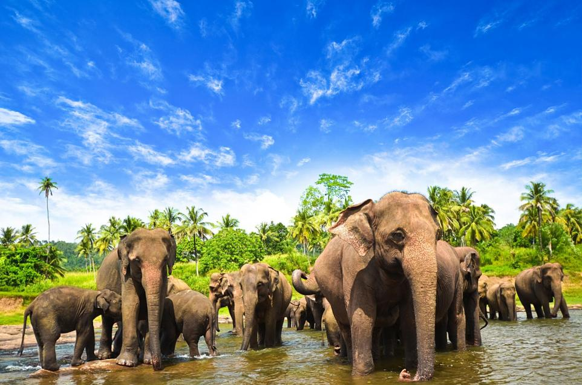

Welcome to Sri Lanka
Srilanka is rich in the heritage of Art, Culture, History, and Knowledge, which makes the country more famous among
travelers from all over the world. Explore the beautiful landscape of Srilanka with Srilankan Tourism and travel to amazing
breathtaking destinations such as the towering mountain of Cappadocia, and the warm beaches of Alanya, the ancient city of
Antalya. Srilankan tourism designs the Srilanka holiday tour packages in such a way that the tourist can enjoy and visit the
places of Srilanka with the best experience.